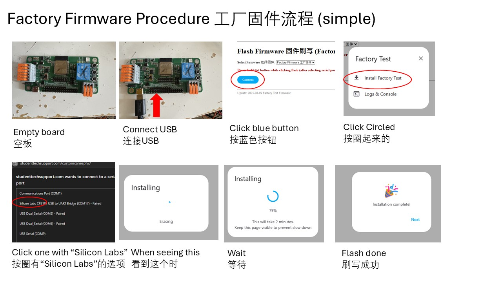
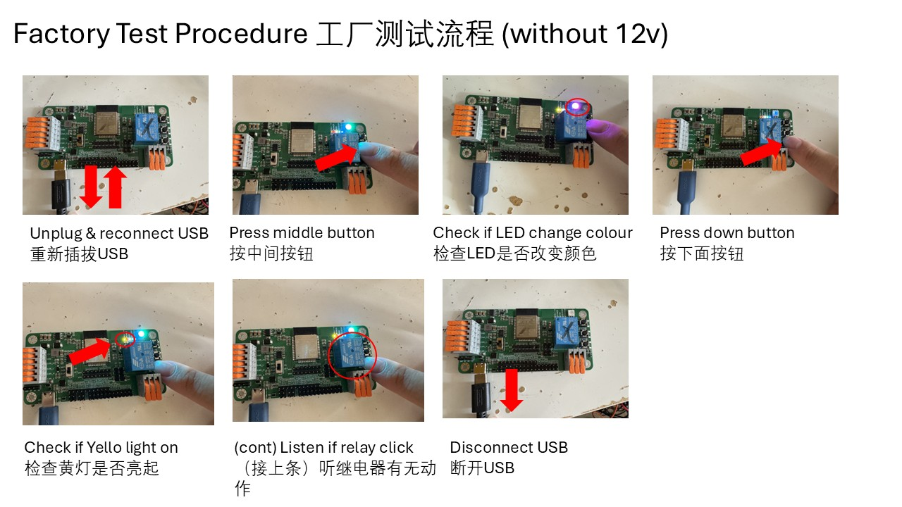
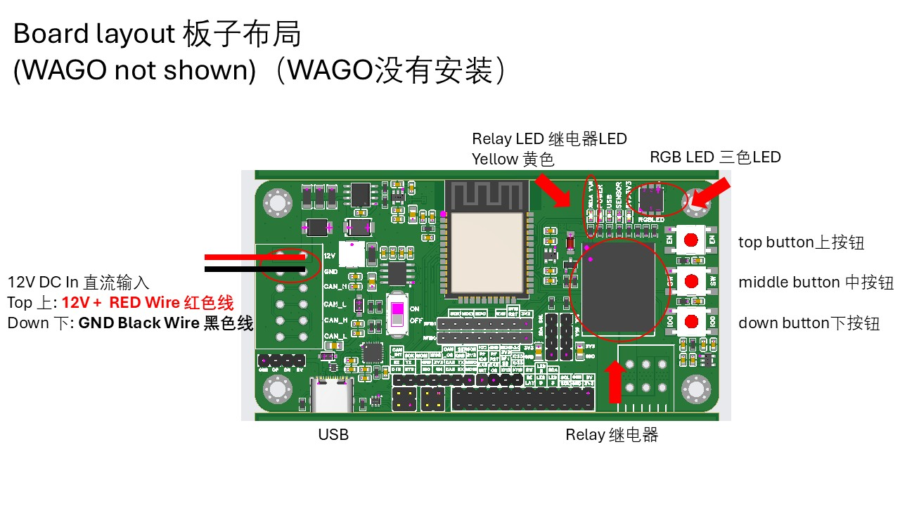
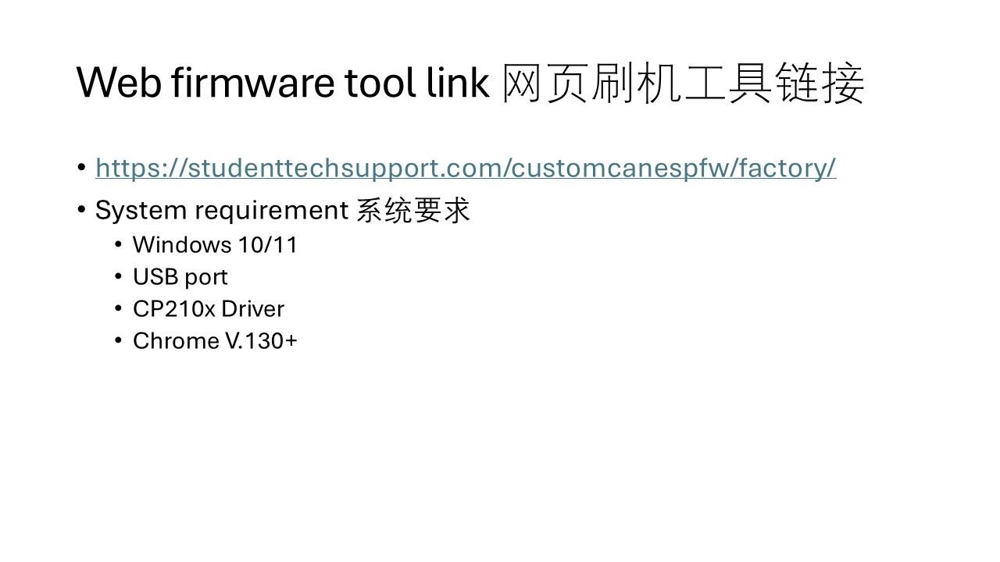

Flash Firmware 固件刷写 (Factory Test 工厂测试)
Select Firmware 选择固件:
Factory Firmware 工厂固件
Please hold
IO0
button while clicking flash (after selecting serial port and connecting).
Your browser does not support Web Serial. Try Chrome or Edge.



